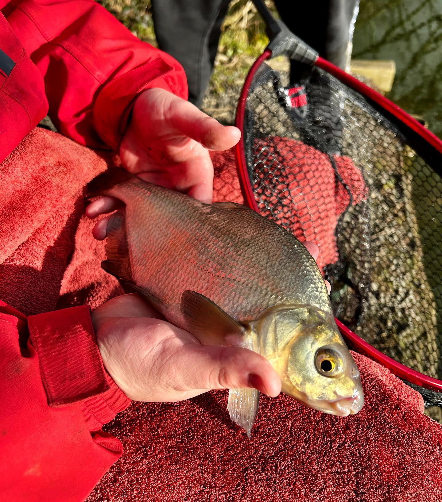
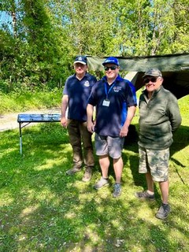
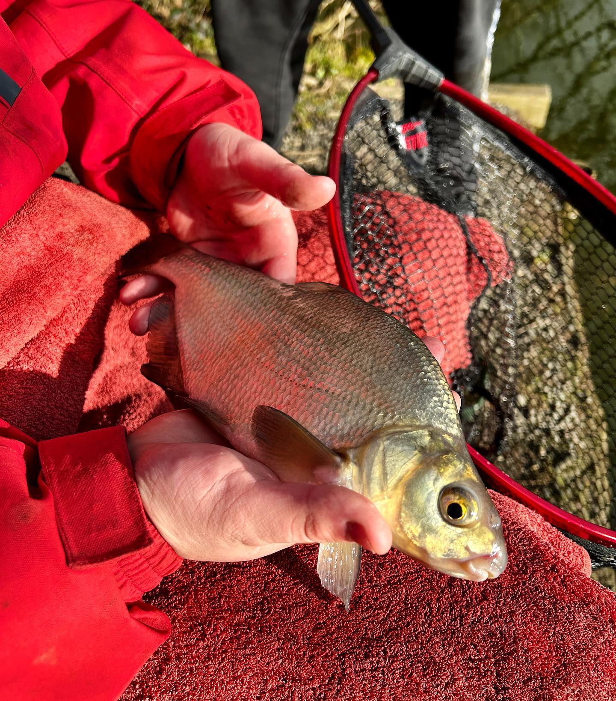
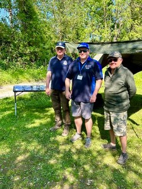

Welcome to First Catch, the home of some of the best angling coaching in Cornwall, but before we let you know how we can be a part of your angling journey and we let you decided whether we provide some of the best coaching in Cornwall, let us share with you how we got to where we are today.
The Team
My name is Dan Smedley and I am the founder and lead angling coach at First Catch.
I've been fishing for over 20 years and during that time I've caught fish from waters far and wide.
Roach and chub from local rivers and canals, big shoals of bream from large club waters, pike and perch
from the Norfolk Broads, tench and crucians from intimate little woodland lakes and carp from challenging day
ticket venues but whatever the target species, fishing has always had a special place in my heart.
To this day I can still remember my first, memorable catch. Fishing a busy day ticket lake with my Dad in
Norfolk and, after spending all day catching tench, I hooked into a small carp about 5-6lbs. It beat me up
for nearly 10 minutes on a light float rod but eventually it slipped into my net and I was lost for words.
From that day on I was hooked on fishing for life. That being said, I can still remember that overwhelming
feeling when I started out, not knowing which knots or floats to use, what hook or hook link I needed,
when to feed bait or indeed when not to feed bait and everything else that you have to consider when going
fishing. I was really lucky when I was younger because I had my Dad to guide me all the way and I still rate
him as one of the best anglers I know.
Now, I am a fully qualified level 2 lead angling coach, licensed through the Angling Trust.
This puts me in a privileged position. It means I can share in that first catch feeling with everyone and even share
in memorable catch moments with more experienced anglers. Now, I could be the one to guide, coach and support new
anglers into the sport or improve the skills of the more experienced and so with that, First Catch was born in June 2022.
What We Offer
First catch offers fishing lessons for those that have never fished before, all the way up to personalised coaching
sessions for the most experienced of anglers. We are strong believers in fishing being accessible for anyone and everyone.
First Catch has team of dedicated and passionate voluntary coaches and friends who are always on standby, ready to
delivery our larger events such as our 'Get Fishing' events whilst most of our smaller, personalised coaching sessions
are delivered by Dan our lead coach.
We're extremely proud to be one of the Angling Trust's 'Get Fishing for Well-being' providers. This not only showcases
our in-depth experience working with SEN but its a recognition of the inclusivity and personal touch we put into all our
sessions. Fishing can help ease the symptoms felt with a variety of mental illnesses such as anxiety, depression,
PTSD, panic attacks and addiction. We would encourage any local care providers to get in touch to discuss how we
can help you or a client.
Price List
| Session | Price |
|---|---|
| The First Catch Entry level lesson |
£50 |
| Intro to Angling Full day |
£90 |
| Dropshotting for Perch 2 hour session |
£30 |
| Core Angling Skills and Techniques Awards 1 - 6 |
1st day £90 Subsequent days £55 |
| Personalised Coaching Full day |
£100 |
| Personalised Coaching Half Day |
£66 |
All prices include: Day ticket for fishery, bait, equipment, and a level 2 coach.
Gallery
 




Contact
Mobile
07949 967302
firstcatchcoaching@gmail.com